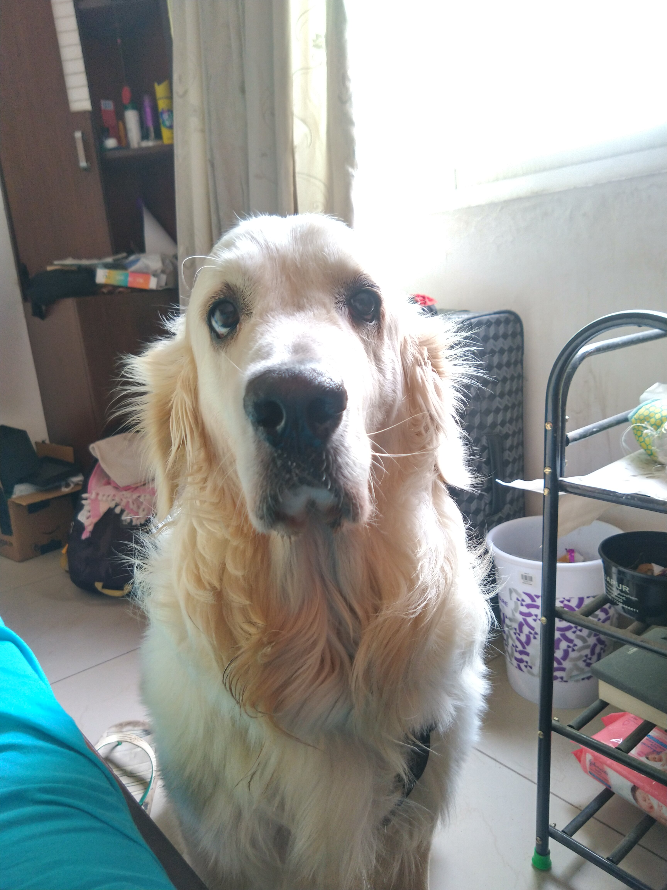
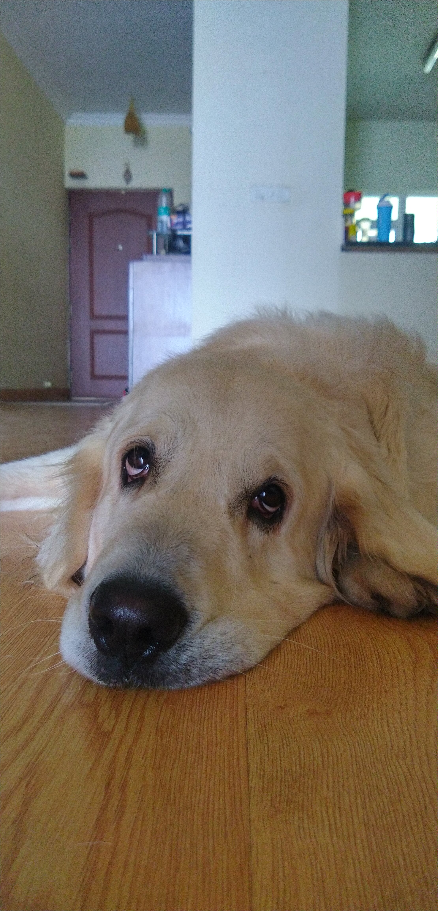
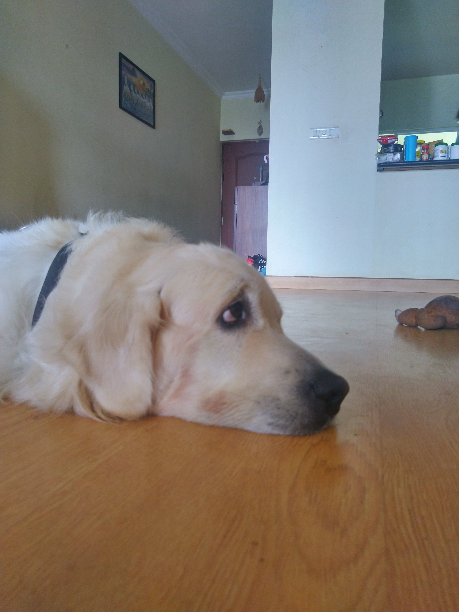
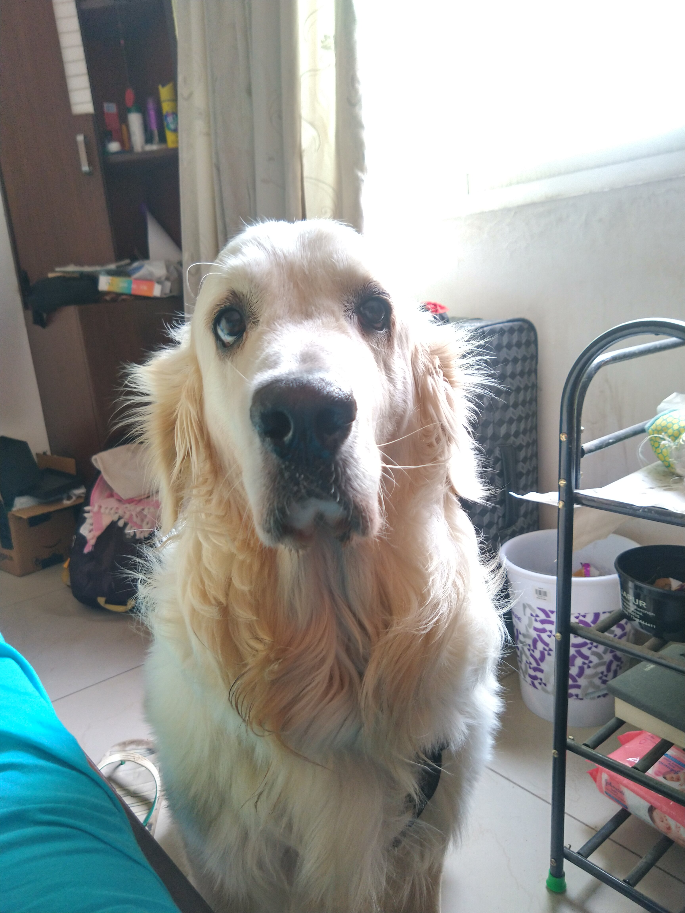
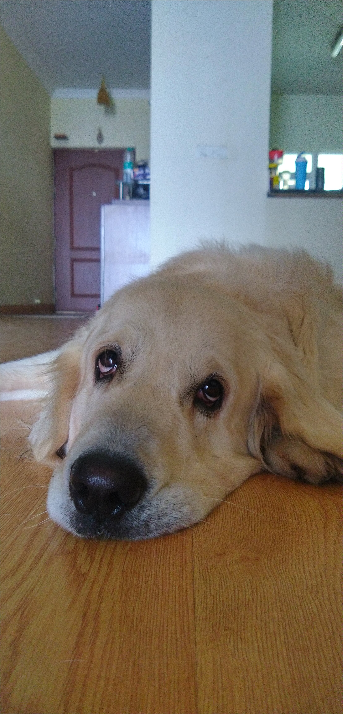
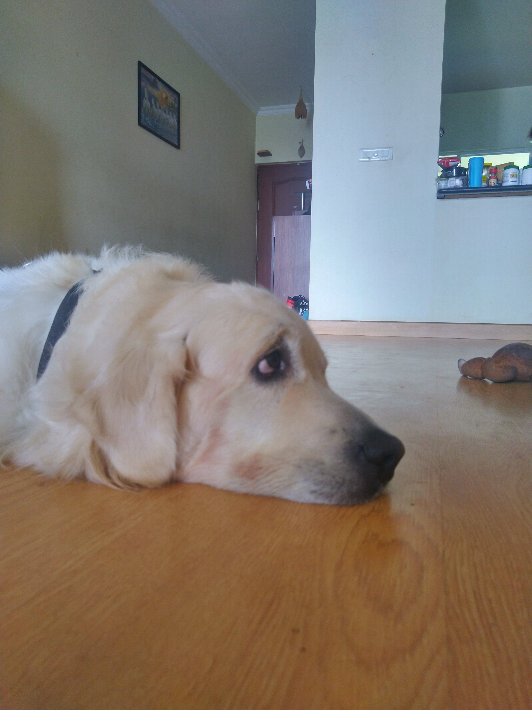

BHAUYOUDOING?
You speak dog better than you think you do. You may not be fluent; that would require actually being a dog. But if you went to live in a dogs-only world, you’d be pretty good at understanding what they’re saying. You can tell a nervous yip from a menacing growl, a bark that says hello from a bark that says get lost. You can read the body language that says happy, that says sad, that says tired, that says scared, that says Please, please, please play with me right now! Think that’s not a big deal? Then answer this: What does a happy bird look like? A sad lion? You don’t know, but dog talk you get.


 




